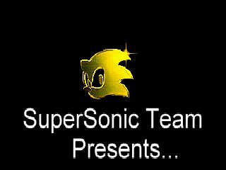
*
Welcome to the official......
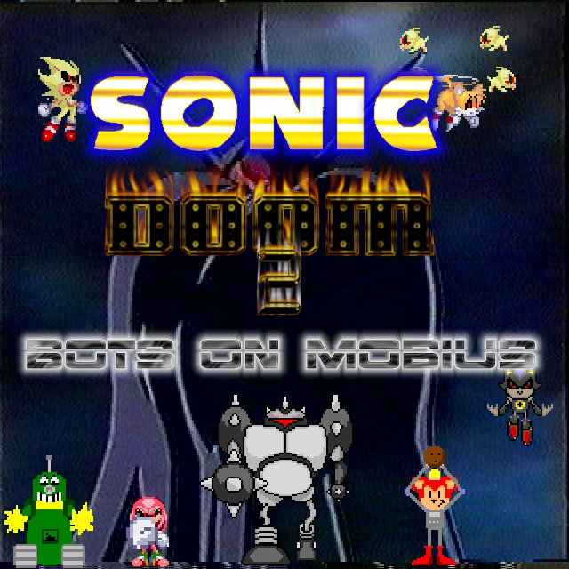
Lettering by Mecha-Sonic@juno.com
Web Site!
The first fan-made 3D Sonic Game!
It all started one summer.....Gollum, the voice of Tails and I got bored of the "monster" idea. So we thought......what else is fun to kill, and isn't demonic?? TAILS!!!! And that's how the original Sonic Doom got started. Even though we added Knuckles later, the source graphics and sounds for it is still called "killtail". We never made Sonic Doom an entirely new game because of it's "craziness", but we are doing that with Sonic Doom 2. Here's both Sonic Doom and Sonic Doom 2 plots, since they fit together:
The last chocolate monkey factory went out of business and GeeKeR is REALLY mad. Sonic, of course, has the last chocolate monkey. GeeKeR possesses Tails & Knuckles to go after Sonic to get his chocolate monkey! First Sonic must go through "Knee-Deep in the GeeK", "On the Shores of NeoDenaire", "Project GKR", and the final episode, "Thy Monkey Consumed", which is after GeeKeR finally gets the chocolate monkey from Sonic, and Sonic is out for revenge!
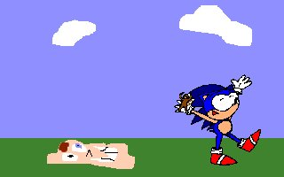
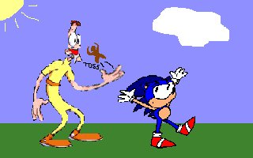
At the end of "Thy Monkey Consumed", Sonic and GeeKeR make up and they are friends. Tails & Knuckles are returned to normal, and a new chocolate monkey factory opens. Then, Dr. Eggman decides to step in, while they are celebrating their success, Eggman gets a Bio-Scan of the Trio. Next, he makes robot-duplicates and gives them special abilities by using the Chaos Emeralds so he can finally conquer Mobius, and he recreates the old zones of Sonic's history to keep him out of the way. Meanwhile, MechaSonic decides that Eggman is just a pile of lard and decides to help Sonic & Co. out. Come for a wild romp through all of Sonic's past zones!
Includes:
Sonic 3
Sonic & Knuckles
Sonic Spinball
*Add-on packs will exist for Sonic 2, Sonic Anime and possibly more!
Sonic Doom 2 (SD2BOM) is available for the general public to download while it is being developed. It requires Doom2, and no technical support is offered for this Beta.
The project has been currently postponed, due to my work on SRB2. The latest version is available for download.
For your enjoyment, here are some screenshots we have so far:
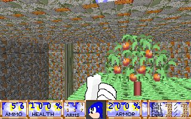
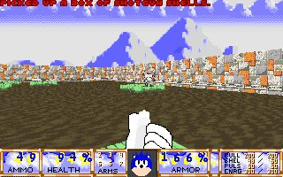
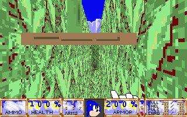
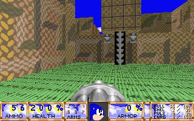
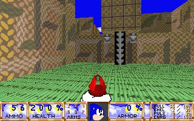
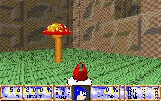
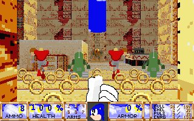
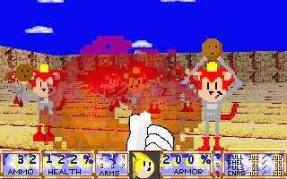
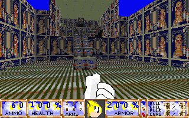
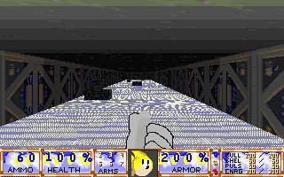
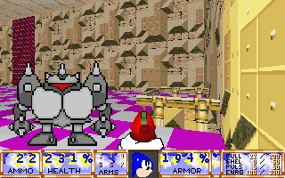
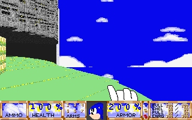
Please take note that these screenshots do not necessarily reflect the final release!
You will be able to choose to play one for four characters, each having advantages and disabilities:
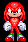
Knuckles - This is one of the best well-rounded characters. He starts with 100% health, he can punch the daylights out of badniks, is the 3rd-place runner, he glides, and he jumps a medium-height.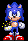
Sonic -He can run the fastest, and pump out ammo like there was no tommorrow, but he can't jump worth beans, and can't carry a lot of ammo. Starts with 100% health.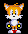
Tails - He runs the slowest, but he has a big advantage: He can FLY, enabling you to find a lot of secrets, and starts with 200% health.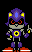
MechaSonic - He's jets around fairly fast, can jump the highest, and is the packhorse for ammo. Since he used to be on EggMan's side, he can emulate many of the enemies' weapons. He sarts with 150% health.
Items
Chaos Emerald Keys - These are used to open doors and the like.
Armor- The Green Chaos gives you 100% and the MegaChaos gives you 200%.
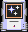
Invincibility - This makes you invincible for a while.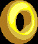
SuperRing - Adds 127% health.MegaRing - Adds a LOT of health!
Rings - Collect these to boost your health.
How to contact us:
SuperSonic Team is composed of more than two people, unlike how it used to be. Contact the correct person as to what they did:
Web Design/Director/Producer/Level,Sprites,Graphics, Music,Voice of Knuckles: A.J. Freda
Level/Sprite editor: Damian Grove
Level Editor: David Everett
Voice of Tails, helped with SD1, but has not worked with SD2: Peter Riccardo
Level Editor: Matt Kucharski
Creator of MANY sprites: Michael Stearns
*SuperSonic team is in no way related or affiliated with Sega or Sonic Team